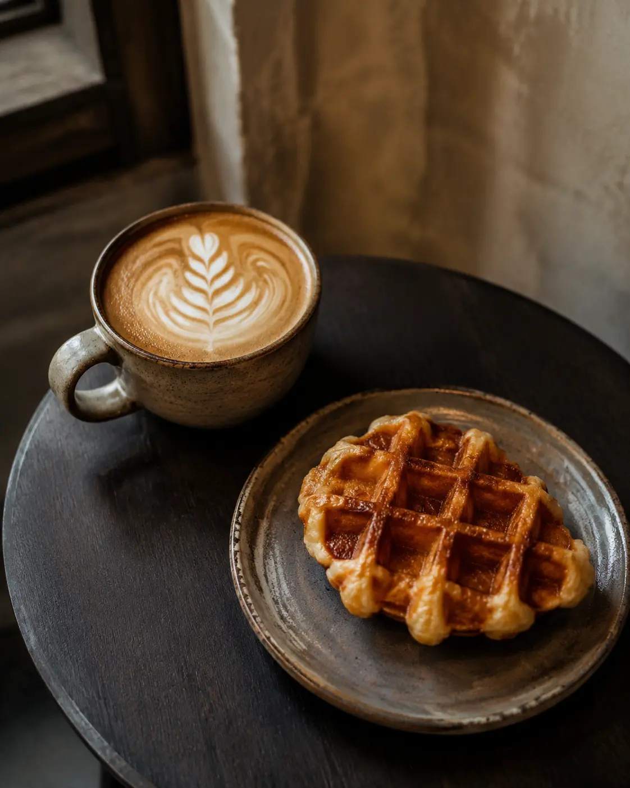

Coffee
กาแฟร้อน เย็น และเมนูแบล็กคอฟฟี่

Charoen Krung · Bangkok
ร้านกาแฟเล็ก ๆ ใกล้ MRT สามยอด แวะเติมความสดชื่น พักกาย และใช้ช่วงเวลาดี ๆ ระหว่างวัน
A pause in the old town
LV99coffee อยู่ริมถนนเจริญกรุง บริเวณปากซอยเจริญกรุง 9 เดินจาก MRT สามยอดประมาณ 140 เมตร พร้อมกาแฟ เครื่องดื่ม ขนม และ Wi‑Fi สำหรับเวลาที่อยากพักสักครู่

Your everyday ritual
“กาแฟดี ๆ ไม่ต้องเร่งรีบ แค่มีเวลาให้ตัวเองสักแก้ว”
เริ่มเช้าด้วยกาแฟ หรือพักบ่ายกับเครื่องดื่มและครอฟเฟิล ในบรรยากาศเรียบง่ายที่เป็นกันเอง
ติดตามเมนูและข่าวสารบน Facebook ↗Customer voice
It was so nice to sit, relax and use the free Wi‑Fi. The dishes were meticulously prepared in an immaculate establishment.Come say hello
ปากซอยเจริญกรุง 9 ถนนเจริญกรุง
แขวงบ้านบาตร เขตป้อมปราบศัตรูพ่าย
กรุงเทพมหานคร 10100
จันทร์–เสาร์ 07:30–16:30 น.
หยุดวันอาทิตย์